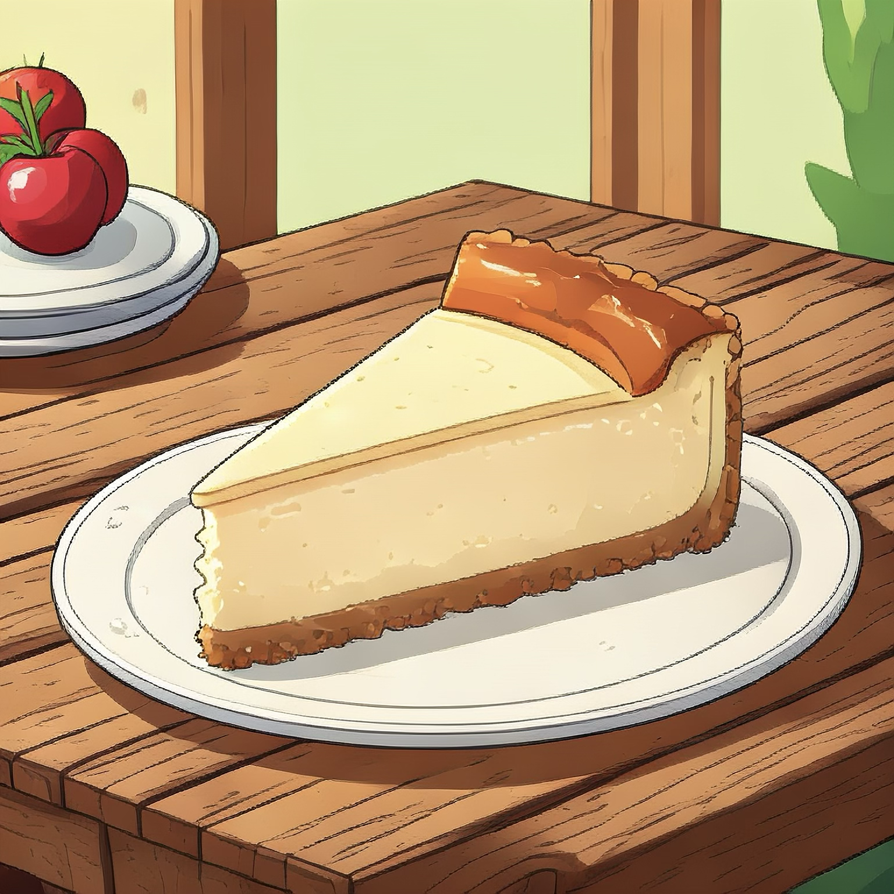

Homepage

NY Cheesecake
If i could choose any dessert to eat for the rest of my life it is this one.
Theres so many varieties, but you can never go wrong with some plain cheesecake.
Ingridients
- Graham Cracker Crumbs
- Butter
- Sugar
- Salt
- Cream Cheese
- All Purpose Flour
- Vanilla Extract
- Lemon Zest/Juice
- Eggs
- Sour Cream
- Springform Pan
Prep Pan & Oven
duty foil on both the sides and bottom. When done, spray the inside of the pan with
nonsitck cooking spray.
Make the Crust
you can layer the bottom of the pan to form your crust. Place in the oven for about 10 minutes.
Cheesecake Batter
until you get that cheesecake mix texture. Then, mix in the vanilla extract, lemon zest or juice, and
salt. Set the mix setting to low and add the eggs one a time and lastly the sour cream until the batter
mix is uniform.
Assemble
Bake
This water bath is to allow the cheesecake to gently cook, otherwise the cheescake can crack up or be dry.
Bake in the oven at 325° until the cheesecake is set, if it looks like liquid it isnt ready yet. You can also
wobble it, should only gently wobble.
Remove and Chill
springform pan and refrigrate the cheesecake for 8 hours, or preferably over night. Your cheesecake is now ready.
You can either eat and share after the time is up, or if there is any left over you can freeze it and will be
good to eat up to 3 months.
Back to recipes